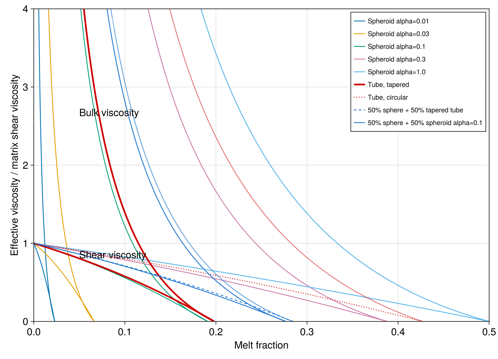
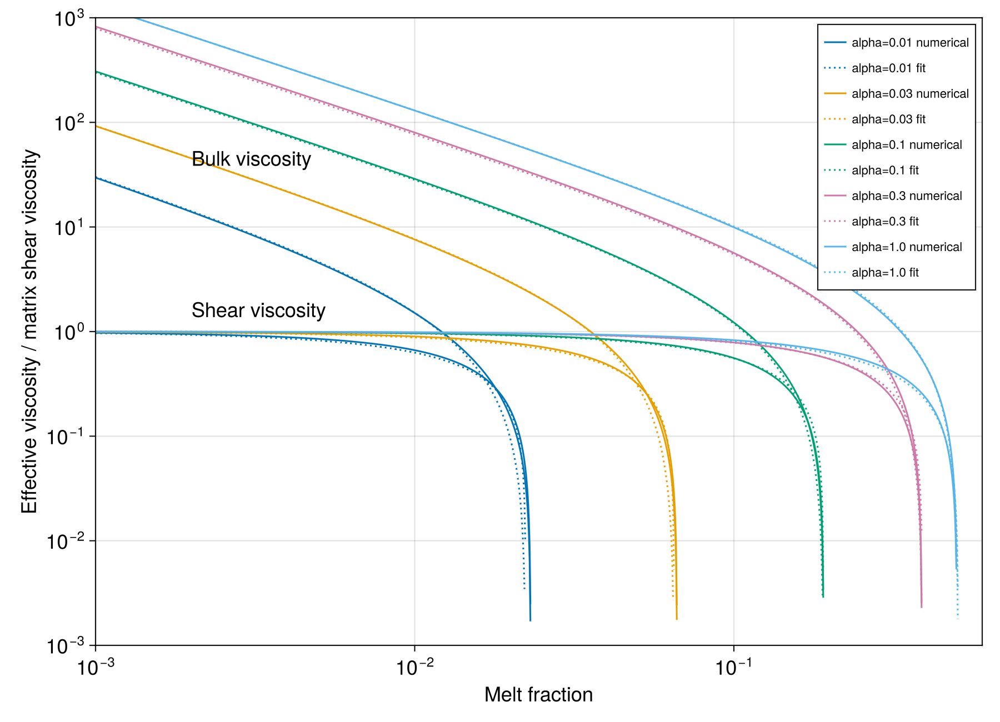

Paper figures
The examples below recreate the model curves in Figures 2 and 3 of Schmeling, Kruse & Richard (2012). Viscosities are normalized by the matrix shear viscosity, so each model uses matrix_shear = 1.
The complete plotting program is examples/paper_figures.jl. Run it from the repository root with:
julia --project=examples -e 'using Pkg; Pkg.instantiate()'
julia --project=examples examples/paper_figures.jlIt writes PNG versions of both figures to examples/output/. Curves below 1e-3 are omitted, following the cutoff used by the original plotting code.
Figure 2: pore geometry and disaggregation
Figure 2 compares effective bulk and shear viscosity for spheroids, tapered and circular tubes, and two mixed pore geometries. A pure-geometry model is constructed with one MeltFraction whose fraction is one:
using ModVisc
pure(geometry) = ViscousModel(1.0, MeltFraction(geometry, 1.0))
porosity = collect(range(1e-6, 0.52; length=1200))
spheroids = [
viscosity_profile(pure(Spheroid(α)), porosity)
for α in (0.01, 0.03, 0.1, 0.3, 1.0)
]
tapered_tube = viscosity_profile(pure(Tube(0.0)), porosity)
circular_tube = viscosity_profile(pure(Tube(Inf)), porosity)Mixtures use multiple MeltFraction components. Their fractions describe the share of total pore volume assigned to each geometry and must sum to one:
sphere_tube = ViscousModel(
1.0,
MeltFraction(Spheroid(1.0), 0.5),
MeltFraction(Tube(0.0), 0.5),
)
sphere_spheroid = ViscousModel(
1.0,
MeltFraction(Spheroid(1.0), 0.5),
MeltFraction(Spheroid(0.1), 0.5),
)
mixed_tube = viscosity_profile(sphere_tube, porosity)
mixed_spheroid = viscosity_profile(sphere_spheroid, porosity)
The upper family of curves is the bulk viscosity and the lower family is the shear viscosity. Each curve terminates when the connected solid framework disaggregates. The experimental and external-model overlays in the published figure are absent because their numerical data are not included with the original ModVisc source.
Open Figure 2 at full resolution

Figure 3: numerical solution and equation 5 fit
Figure 3 compares the self-consistent spheroid solution with the analytical fit given by equation 5. Solid lines show viscosity_profile; dotted lines show spheroid_fit:
using ModVisc
pure(geometry) = ViscousModel(1.0, MeltFraction(geometry, 1.0))
porosity = 10.0 .^ range(-3, log10(0.6); length=1200)
for α in (0.01, 0.03, 0.1, 0.3, 1.0)
numerical = viscosity_profile(pure(Spheroid(α)), porosity)
fitted = spheroid_fit.(porosity, α)
numerical_bulk = numerical.bulk
numerical_shear = numerical.shear
fitted_bulk = getproperty.(fitted, :bulk)
fitted_shear = getproperty.(fitted, :shear)
end
The agreement is closest at low porosity. The curves separate near their geometry-dependent disaggregation porosity, where both effective viscosities fall rapidly.